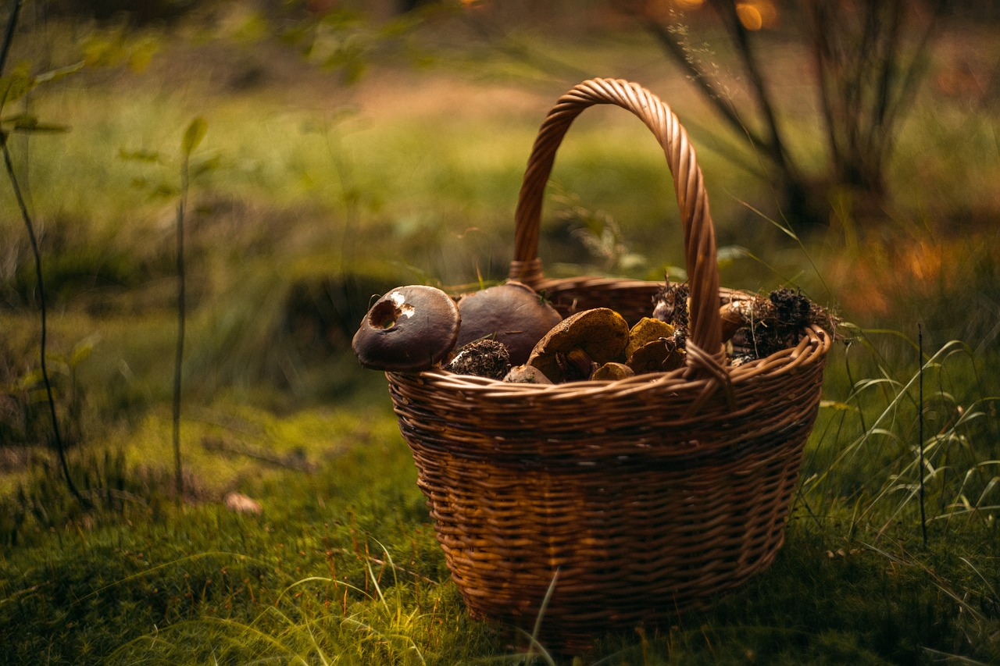

Anna, 72 lata - Grzybiarka z lasów Podlasia

Wczoraj udało mi się zebrać piękny kosz borowików! W lesie było cicho, spokojnie, aż chciało się zostać tam na dłużej. Po drodze natrafiłam też na kilka kurek, które od razu trafiły do mojego koszyka.
Cieszę się, że grzyby rosną tak obficie w tym roku. A Wy, jakie grzyby znaleźliście w ostatnich dniach?